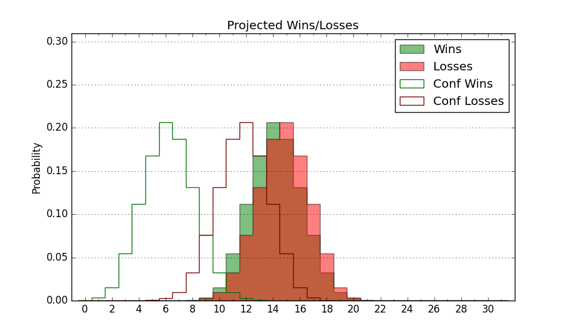

| Home | Game Probabilities | Conferences | Preseason Predictions | Odds Charts | NCAA Tournament |
| City: | Davidson, North Carolina | |
| Conference: | Atlantic 10 (13th)
| |
| Record: | 0-3 (Conf) 8-6 (Overall) | |
| Ratings: | Comp.: 2.7 (136th) Net: 2.9 (137th) Off: 105.3 (153rd) Def: 102.4 (148th) SoR: 1.9 (126th) |
| Remaining | ||||||
|---|---|---|---|---|---|---|
| Date | Opponent | Win Prob | Pred. | |||
| 1/17 | @ Fordham (164) | 41.2% | L 69-72 | |||
| 1/20 | Richmond (82) | 47.6% | L 66-67 | |||
| 1/24 | @ Saint Louis (213) | 50.7% | W 74-73 | |||
| 1/27 | VCU (89) | 48.7% | L 67-68 | |||
| 2/4 | @ Loyola Chicago (122) | 31.2% | L 64-70 | |||
| 2/7 | @ Duquesne (99) | 25.0% | L 66-73 | |||
| 2/10 | George Mason (79) | 46.8% | L 65-66 | |||
| 2/13 | La Salle (228) | 79.8% | W 75-66 | |||
| 2/17 | @ St. Bonaventure (71) | 18.0% | L 63-73 | |||
| 2/20 | Fordham (164) | 70.5% | W 74-67 | |||
| 2/24 | @ Richmond (82) | 21.0% | L 62-71 | |||
| 2/27 | @ Dayton (18) | 7.4% | L 60-75 | |||
| 3/2 | Massachusetts (96) | 51.3% | W 73-72 | |||
| 3/6 | Loyola Chicago (122) | 60.7% | W 68-65 | |||
| 3/9 | @ Saint Joseph's (78) | 20.5% | L 65-74 | |||
| Previous | Game Score | |||||
| Date | Opponent | Win Prob | Result | Off | Def | Net |
| 11/10 | (N) Maryland (91) | 34.4% | W 64-61 | 3.3 | 9.3 | 12.7 |
| 11/12 | (N) Clemson (26) | 14.9% | L 65-68 | 2.6 | 8.7 | 11.3 |
| 11/17 | @East Tennessee St. (236) | 54.8% | L 68-70 | -4.0 | -1.8 | -5.9 |
| 11/21 | Boston University (284) | 87.0% | W 69-45 | 0.0 | 16.3 | 16.3 |
| 11/24 | @Saint Mary's (22) | 8.1% | L 55-89 | -0.6 | -29.2 | -29.8 |
| 11/29 | @Charlotte (112) | 27.6% | W 85-81 | 30.3 | -17.8 | 12.4 |
| 12/2 | Wright St. (141) | 65.9% | W 82-73 | 8.9 | -1.0 | 7.9 |
| 12/6 | Campbell (299) | 89.1% | W 62-50 | -16.9 | 13.9 | -3.0 |
| 12/9 | Miami OH (231) | 80.1% | W 79-61 | 10.4 | 6.2 | 16.7 |
| 12/21 | USC Upstate (305) | 90.1% | W 62-59 | -9.8 | -10.1 | -19.9 |
| 12/30 | (N) Ohio (189) | 62.1% | W 72-69 | -12.5 | 15.4 | 2.9 |
| 1/3 | Dayton (18) | 21.4% | L 59-72 | -13.9 | 5.7 | -8.2 |
| 1/9 | Rhode Island (193) | 75.5% | L 74-79 | -1.6 | -13.2 | -14.8 |
| 1/13 | @George Washington (171) | 43.0% | L 79-83 | 3.0 | -2.0 | 1.0 |
| Stats & Trends | |||||
|---|---|---|---|---|---|
| Current | Day | Week | Month | Season | |
| Composite | 2.7 | +0.5 | -0.6 | -2.1 | +1.5 |
| Comp Rank | 136 | +3 | -3 | -15 | +13 |
| Net Efficiency | 2.9 | +0.5 | -0.8 | -3.4 | -- |
| Net Rank | 137 | +8 | -3 | -20 | -- |
| Off Efficiency | 105.3 | +0.6 | +0.2 | -5.5 | -- |
| Off Rank | 153 | +7 | -6 | -83 | -- |
| Def Efficiency | 102.4 | -0.1 | -1.0 | +2.1 | -- |
| Def Rank | 148 | +2 | -11 | +53 | -- |
| SoS Rank | 150 | +30 | -3 | +16 | -- |
| Exp. Wins | 14.2 | -0.4 | -1.5 | -2.1 | -0.3 |
| Exp. Conf Wins | 6.2 | -0.4 | -1.5 | -2.6 | -2.4 |
| Conf Champ Prob | 0.0 | +0.0 | -0.2 | -3.8 | -4.2 |

| Advanced Stats | ||
|---|---|---|
| Stat | Value | Rank |
| Off Eff FG % | 0.520 | 125 |
| Off Ast Ratio | 0.149 | 120 |
| Off ORB% | 0.263 | 220 |
| Off TO Rate | 0.151 | 182 |
| Off FT Ratio | 0.372 | 79 |
| Def Eff FG % | 0.501 | 167 |
| Def Ast Ratio | 0.148 | 234 |
| Def ORB% | 0.279 | 187 |
| Def TO Rate | 0.150 | 169 |
| Def FT Ratio | 0.271 | 64 |